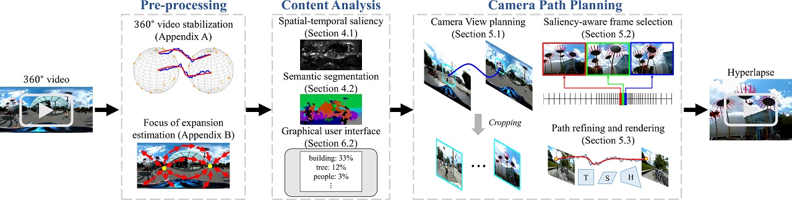

Abstract
We present a system for converting a fully panoramic (360°) video into a normal field-of-view (NFOV) hyperlapse for an optimal viewing experience.
Our system exploits visual saliency and semantics to non-uniformly sample in space and time for generating hyperlapses.
In addition, users can optionally choose objects of interest for customizing the hyperlapses.
We first stabilize an input 360° video by smoothing the rotation between adjacent frames and then compute regions of interest and saliency scores.
An initial hyperlapse is generated by optimizing the saliency and motion smoothness followed by the saliency-aware frame selection.
We further smooth the result using an efficient 2D video stabilization approach that adaptively selects the motion model to generate the final hyperlapse.
We validate the design of our system by showing results for a variety of scenes and comparing against the state-of-the-art method through a user study.
Algorithm Overview

Reference
- • N. Joshi, W. Kienzle, M. Toelle, M. Uyttendaele, and M. F. Cohen, “Realtime hyperlapse creation via optimal frame selection,” ACM Transactions on Graphics (Proceedings of SIGGRAPH), vol. 34, no. 4, pp. 63:1–63:9, 2015.
- • Y.-C. Su, D. Jayaraman, and K. Grauman, “Pano2vid: Automatic cinematography for watching 360° videos,” ACCV, 2016.